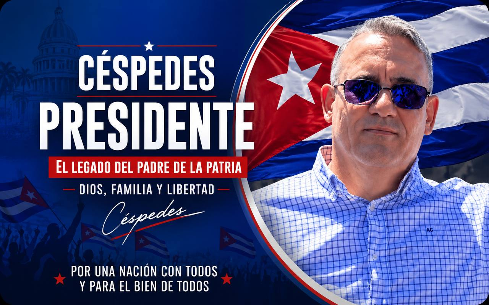

Luis Michel Céspedes Rodríguez es un activista cívico cubano vinculado al Movimiento Cristiano Liberación, organización inspirada en el legado de Oswaldo Payá y enfocada en la defensa pacífica de los derechos humanos, las libertades fundamentales y la transición democrática en Cuba.
Participa activamente en espacios de comunicación ciudadana y debate público relacionados con libertad y derechos ciudadanos, participación democrática, reconciliación nacional, valores éticos y cristianos, y construcción de una Cuba plural y democrática.
Su discurso público combina referencias históricas republicanas cubanas con mensajes centrados en la dignidad humana, la unidad nacional y el compromiso cívico. En redes y comunidades prodemocracia ha recibido respaldo alrededor de la iniciativa simbólica “Céspedes Presidente”, frecuentemente expresada desde el humor político y la participación espontánea.

Base de esta ficha: información textual aportada para el registro de candidaturas y pieza visual asociada al mensaje público “Céspedes Presidente”.